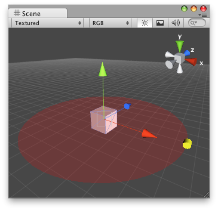

Handles.DrawSolidDisc
Parameters
| center | The center of the dics. | |
| normal | The normal of the disc. | |
| radius | The radius of the dics Note: Use HandleUtility.GetHandleSize where you might want to have constant screen-sized handles. |
Description 描述
Draw a solid flat disc in 3D space.

Solid Disc in the Scene View.